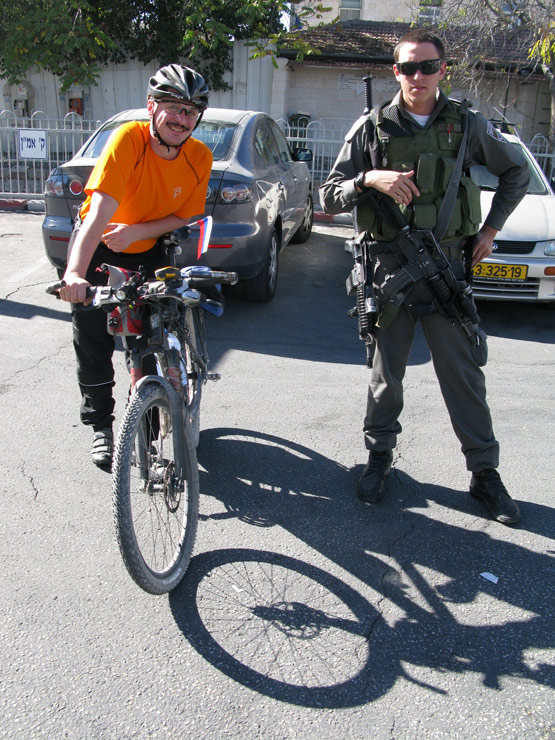
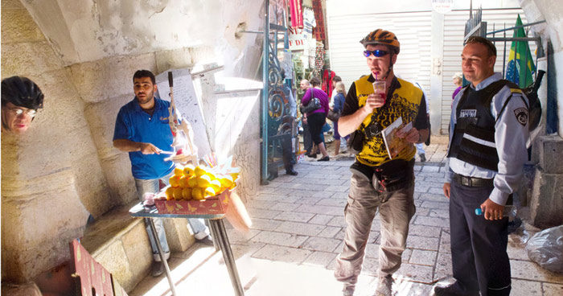
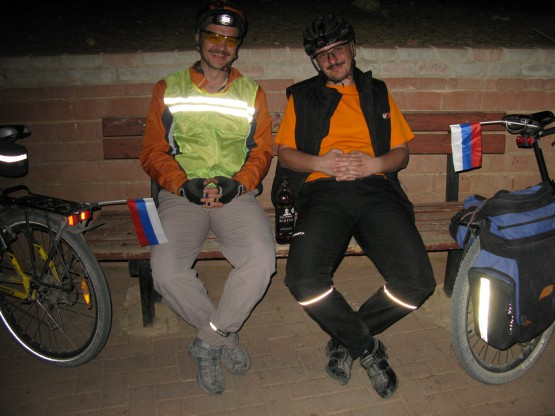

Третий день ВелоХануки.
Однако сон творит чудеса. Утром встали бодрые, позавтракали, сели на велики и весело покрутили в сторону центра. Езда по Иерусалиму специфична. Тротуары узкие, местами стоят столбы, мимо которых даже пешеход проходит боком. Много машин, перекрестков и кругом сплошные холмы. В общем, очень не привычно. Благо не так давно там построили трамвай, но еще не запустили, так вот по этим трамвайным путям получается ездить наиболее комфортно.
Проехали через арабский квартал И кварталортодоксальных евреев. Покрутились в центре.
Диалог по-русски: -а зачем Вам 2 автомата?
-чем бльше - тем лучше! 

Приехали к воротам старого города, немного пофотографировали и углубились за крепостные стены. Велосипед тут явно лишний, толпы народа, кругом продают бесполезнее туристические радости. Мне очень напомнило стамбульский торговый квартал. Наш путь лежит к Храму Гроба Господня
Да совсем забыл сказать, что по пути к Храму произошел странный факт отделения головы Дяди Вовы от тела, чему есть документальное свидетельство Не стоит удивляться, в Иерусалиме часто происходят странные вещи.

Дальше наш путь лежал через армянский квартал к Стене плача. Не забудьте, что мальчикам налево Все-таки Дядя Вова был прав, на велосипедах по Иерусалиму перемещаться удобнее, чем пешком. Затем была Масличная гора. По пути заскочили в Гефсима́нский сад, древние оливы в нем впечатляют.
Подъем на Масличную гору отличное место для тренировок в апхиле, но вид с вершины стоит этих усилий. На спуске у меня даже посинели тормозные диски. Однако день в Иерусалиме пролетел очень быстро, солнышко пошло к закату и пока еще не выключили свет, мы решили перекусить. Как по заказу появился маленький парк прямо в центре города с искусственным ручейком, журчащим по камням. Разожгли горелку, попили чайку - ляпота
Дядя Вова все пытался показать нам еще чего-то, но на завтра у нас планировался жесткий ходовой день и мы поехали домой по уже хорошо знакомым трамвайным путям. Правда, спать мы в этот раз легли совсем не рано. Дело в том, что в пятницу после заката наступает этот самый, страшный Шаббат Улицы Иерусалима практически полностью опустели. Ранее я неоднократно читал, что в Шаббат закрыто абсолютно все, однако в центре Иерусалима работали кафешки и даже один прекрасный винный магазин, где мы отоварились недорогим, но весьма приличным виски.
Ездить по Иерусалиму в Шаббат очень приятно. Людей нет, машин нет, тепло, южные звезды, незнакомые запахи местных цветов, сказка. Немного жаль, что рано вставать.

Дневной пробег - 25 км. Трек.